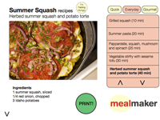

Design that flows
I am an interaction designer who works to create useful, useable, and desirable software, products, and services that make a positive impact in our daily lives.
My background:
- a Computer Science degree
- a Masters in Human-Computer Interaction
- 12 years of software experience across B2B, eCommerce, consumer, industrial, and collaboration from startups to global businesses
In your organization, I will:
- utilize best-practice design methods, qualitative and quantitative
- interpret user needs into design concepts, information architecture, and wireframes
- communicate across disciplines to find shared solutions
Below are my grad school projects with real clients. I will present my professional work at General Electric, eBay, and Earcandy in person. You can contact me at karl.nieberding@gmail.com.
Projects: Salesforce.com Fluency, Mayo Clinic LiveWell, iCarnegie Trestle, Microsoft Cozm, Get•It•Board, Magic Meal, Shareflect, Meal Maker.
Salesforce.com: Fluency
My capstone project team researched, designed, and developed an extension for Salesforce that helps salespeople quickly and easily create and update records using natural language processing.
I led the team in brainstorming, needs validation, prototyping, iterative design, and final wireframing. I also contributed to conducting user research, interpreting findings, and running usability studies.
-
Territory Map
images/fluency1.pngI led the team in the creation of a territory map to represent our shared view of the project.
-
Heuristic Evaluations
images/fluency2.gifI pushed the team to conduct background research on existing natural language systems, using heuristic evaluation to assess their strengths and weaknesses.
-
Contextual Inquiries
images/fluency3.pngI sat and partnered with users as they performed their work in Salesforce to understand how they use it in real world situations.
-
Synthesis
images/fluency4.pngUsing affinity diagrams, I helped the team consolidate and interpret the research results into useful insights and compelling design directions.
-
Brainstorming
images/fluency5.pngI led brainstorming with the team to come up with as many ideas as possible, asking team members to visualize each of their ideas to facilitate discussions.
-
Storyboarding
images/fluency6.pngI condensed our initial ideas into promising concepts that we storyboarded and showed to users for needs validation.
-
Prototypes
images/fluency7.pngI formulated our iterative design process, consisting of low, mid, and high fidelity prototypes. Eleven different prototypes were created as we explored different concepts and interfaces.
-
Usability Testing
images/fluency8.pngI conducted usability tests with users both over the phone and in person at the usability labs at Salesforce.com.
-
Final Design
images/fluency9.pngI created the wireframes for our final working prototype that we delivered to our clients at Salesforce.com, available to show via e-mail or in person.

Mayo Clinic: LiveWell
We designed a service for the Mayo Clinic to help people support each other in making healthier decisions on a daily basis. I contributed by designing take-home journal studies, translating research results into design directions, creating conceptual models to help communicate the design, and iterating based on client feedback. I and my teammate Paul presented the design to an enthusiastic audience of health care professionals at Mayo Clinic.

The following video demonstrates how our service would be adopted and used in a typical midwestern suburb. I contributed to the concept of the service and designed the website wireframes.
iCarnegie: Trestle
We redesigned an online course-delivery platform to improve students' experience and productivity utilizing contextual inquiry and usability evaluation methods. I contributed by performing research, sketching prototypes and wireframes, leading the group design process, and writing the design specifications for implementation. The final product suggested a new structure for the site with three key features designed to suit user needs that were unfulfilled.
Microsoft: Cozm
Microsoft challenged us to explore new ways of working. My team focused on career-building through meaningful social connections instead of superficial job fairs and networking events. Our multi-platform (web and mobile) system, Cozm, helps people connect their contacts with matching career goals as well as make new connections in person with others who share a common career interest. I contributed to conducting and interpreting user research, concept generation, and iterative refinement.
The Get•It•Board
My team studied the collaborative shopping process (a group of roommates purchasing a couch for their apartment), which consisted of browsing internet ads, sharing links via e-mail, and in-person discussion. To better facilitate this process, we designed the Get•It•Board, an online space to post, organize, and discuss shopping options in a group. Rather than impose a voting system, the Get•It•Board allows users to express opinions, compromise, banter, and bond with groupmembers over the shopping process. I contributed by interpreting research, leading concept generation, choosing features and interactions, performing usability evaluation methods, and writing the design documentation.
Magic Meal
This project required us to design a mobile application to support the cooking needs of teenage babysitters. By creating a persona—Megan—complete with end, experience, and life goals, a personal background, and scenario of use, we identified that a babysitter's challenge is to cook a good meal with on-hand ingredients. Megan can quickly enter ingredients into Magic Meal, which provides a list of suggested dishes updated with the known ingredients. By using this application, Megan not only builds her own cooking skill, but receives repeat business and recommendation from the parents for her independence and responsibility. I contributed to persona creation, concept generation, interaction design, and wireframing.
Meal Maker
We were challenged to design a sensor-based kiosk situated in a specific environment. We explored ways that the high-end grocery store experience could be improved and storyboarded concepts with users to see which resonated most. Many users recognized the need to find recipes for an ingredient of interest. Our kiosk, Meal Maker, scans any ingredient and offers a visual list of recipes that use the ingredient. The shopper can print out a recipe of choice on the spot and pick up the other required ingredients while at the store. I contributed with in-person observations, brainstorming, needs validation, concept generation, information architecture, wireframes, and video production.
